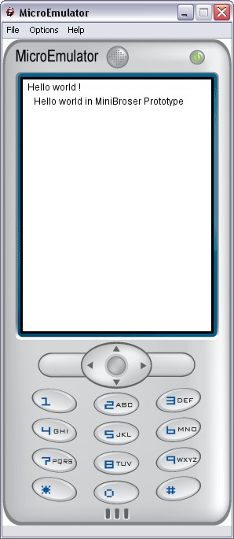

MiniBrowser prototype

Introduction
Display XHTML content.
The prototype handles keys (up/down/fire) and touch screen events.
A scrollbar is added on the right side of the rendered text if necessary.
Interface
Fields description
Event Out
- SFString linkSelected - String contains the href of a link when the user selects a link (using the fire button or when touching a link).
Event In
- SFBool activLink - Launch manually a clic event on a href link. The event linkSelected is launch with current selected link value.
Fields
- MFString string [] - The XHTML content to be rendered, all entries will be concatenated.
- SFBool activate TRUE - If FALSE, all key or touch events will be ignored. Default: TRUE.
- SFString style "" - Specify a style sheet that will supersede the usual XHTML ones.
- SFVec2f size 0 0 - The size, in pixels, of the rendering box.
- SFNode scrollBarMaterial NULL - Material to use for the scroll bar. Default: Material2D { filled TRUE emissiveColor 0.8 0.8 0.8 }.
CSS
No associated CSS
Example